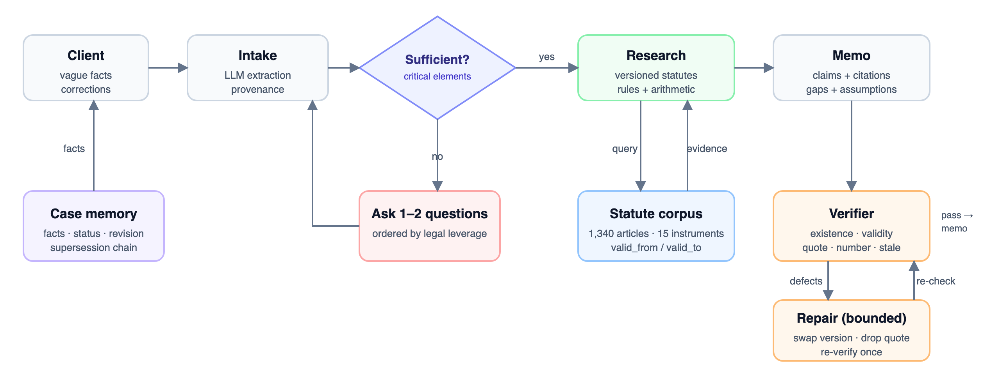

NLP Course Project
LexFlow
先问再答的法律咨询 Agent
要件事实门控 · 法条时间效力 · 事实更正后的重算
大多数法律 RAG 回答“问题”。
我们先判断“这个问题现在能不能回答”。
课程项目 · 组号 ___ · 2026-11
The problem
同一句话，三种结论
客户只说了一句：“公司把我辞退了。”
缺：制度是否公示
2N
制度未公示 → 不能作为解除依据 → 违法解除赔偿金
齐：公示 + 证据 + 工会
0
第39条合法解除 → 无需支付经济补偿
缺：解除日期
时效
超过一年 → 对方可提仲裁时效抗辩
缺三个事实，结论从 15 万变成 0，或者变成“先解决时效”。
What changed in 2026
“咨询”已经被 benchmark 化了
LeCoDe · ACL 2026
~36%
强模型在给建议前只问到约 36% 的关键事实
DLawBench · 2026
0.562
最强模型在咨询式法律推理上的得分；还暴露法律谄媚
Harvey LAB-AA · 2026-10
核验
真实工作产物 + rubric + 幻觉检查成为门槛
所以我们不把“会追问”当卖点，把“事实改了会重算”当卖点。
System
一个状态机，不是四个 agent

模型只做抽取和白话解释；引用、金额、期限由确定性规则层完成。
Three mechanisms
每个机制都有对应的指标
| 机制 | 做法 | 指标 |
|---|
| 要件事实门控 | 关键事实缺失就追问，不硬答 | 覆盖率 · 过早结论率 |
| 法条时间效力 | 检索和引用限定在案发日有效的版本 | 版本 · 时效一致率 |
| 版本化记忆 | 更正后只重算受影响的部分 | 旧结论残留率 · 失效缓存数 |
2022-05-01 前，残疾赔偿金区分城乡；之后统一按城镇标准。
同一起事故，日期不同，适用的司法解释不同。
Evaluation
12 个受控案例 × 4 个配置
关键事实覆盖率
57.5% → 100%
answer_first → 任何带门控的配置
过早结论率
58.3% → 0%
事实没齐就出备忘录的比例
旧结论残留
100% → 0%
full_no_revision → full；只改“是否复用旧分析”
追问负责“问全”，版本化记忆负责“改对”。
DeepSeek 官方 API；12 案例 × 4 配置共 149k 输入 + 11k 输出 tokens，约 0.17 元。
金标准与规则层同源：法律结论的 100% 只说明管线一致，行为差异才是结果。
Error analysis
一个真实的 bug：日期精度
客户说“2024 年 1 月”，模型归一成 2024-01-01，门控把它当成精确日，
时效届满日算成 2025-01-01，而不是 2025-01-05。
修复：从原文恢复“月精度”，再追问具体哪一天。
教训：危险的不是错一句话，是一个错状态被后面当成确定事实。
Limitations & takeaway
我们没测什么
- 只有两个案由、12 个案例、脚本化当事人，不外推为通用法律能力。
- 时效起算、社平工资封顶、损害赔偿金额都做了简化。
- 核验器抓不到“法条选错但版本有效”“论证跳跃”。
- 金标准与规则层同源，法律结论靠人工盲审补。
我们没有让模型更懂法。
我们让 agent 更清楚自己什么时候不该回答。